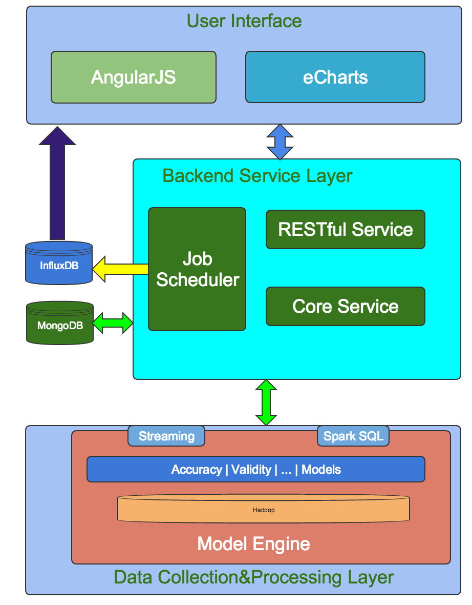
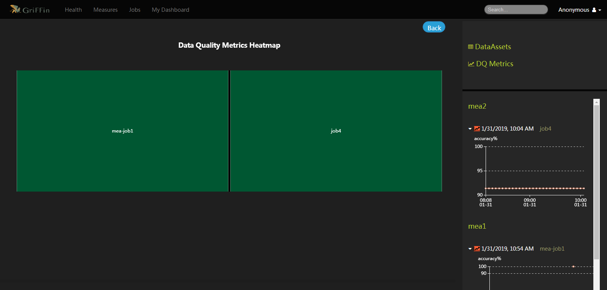
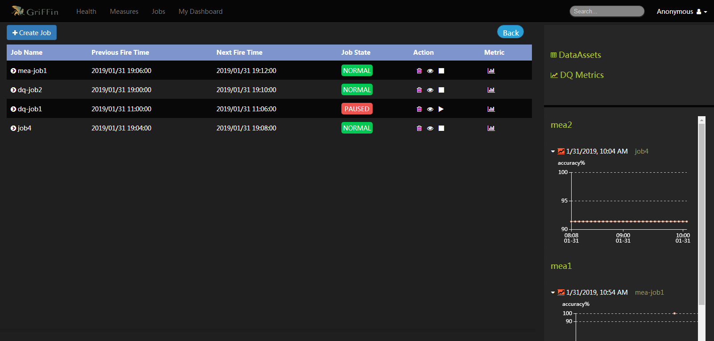
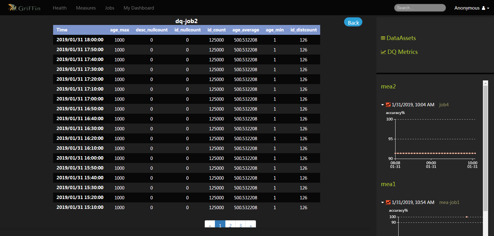
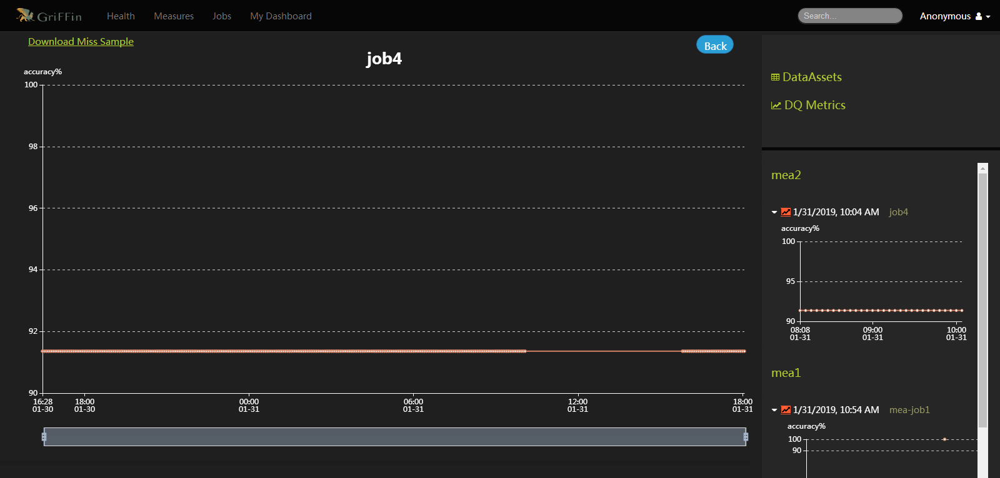
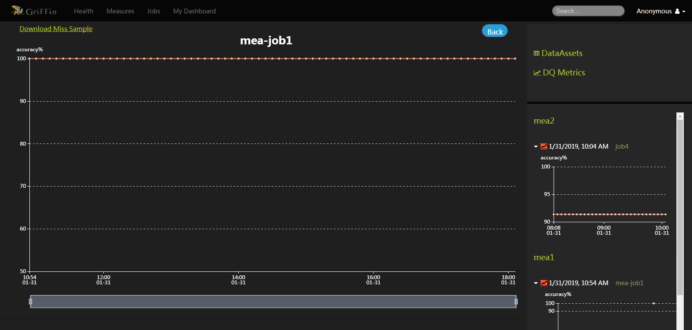

Apache Griffin是一个应用于分布式数据系统中的开源数据质量解决方案。在Hadoop, Spark, Storm等分布式系统中，提供了一整套统一的流程来定义和检测数据集的质量并及时报告问题。
Apache Griffin填补了开源世界里在大数据质量领域的空白。就像空气质量，水和食品安全等无时不刻地在影响人类的生命一样，数据质量在数据科学领域是至关重要的。在大数据时代，企业决策调整，商机发现等越来越依赖于大数据的数据分析和数据挖掘，而数据质量的保证是所有一切数据分析和数据挖掘的基础。
系统架构

Griffin架构图
1.apache griffin 安装配置；
从官网下载最新版本http://griffin.apache.org/docs/latest.html，源码版本进行编译安装；
2.(1)配置measure组件；
配置env-batch.json中hdfs和es的path,分别为"hdfs://10.2.29.101:8020/griffin/batch/persist","http://10.2.29.102:9200/griffin/accuracy",env-streaming.json类似，env-streaming.json还要配置zk的host为“10.2.29.101:2181“，其他默认；
配置config-batch.json，config-streaming.json其中的sinks至少要有es，配置config-batch-advanced.json["HDFS","ELASTICSEARCH","CONSOLE"]，运行maven命令，mvn clean package -Dmaven.test.skip=true;
(2)配置service组件；
配置env下env_streaming.json，env_batch.json，配置同measure;
配置application.properties，配置端口为9270，server.port=9270；
配置quartz数据库，进入postgres用户下bin目录下，createdb -O <username> quartz，将项目中的Init_quartz_postgres.sql quartz拷贝到一个目录，psql -p <port> -h <host address> -U <username> -f Init_quartz_postgres.sql quartz；
配置spring.datasource为相应的数据库quartz，设置用户名密码，设置相应数据库驱动，设置hive.metastore.uris=thrift://en1-dev1-tbdp.trendy-global.com:9083，hive.metastore.dbname=default，kafka.schema.registry.url=http://en1- dev1-tbdp.trendy-global.com:6667，fs.defaultFS=hdfs://nn1-dev1-tbdp.trendy-global.com:8020，elasticsearch.host=10.2.29.102，elasticsearch.port=9200，livy.uri=http://en1-dev1-tbdp.trendy-global.com:8999/batches，yarn.uri=http://en1-dev1-tbdp.trendy-global.com:8088；
配置sparkProperties.json，如下：
{
“file”: “hdfs:///griffin/griffin-measure.jar”,
“className”: “org.apache.griffin.measure.Application”,
“name”: “griffin”,
“queue”: “default”,
“numExecutors”: 3,
“executorCores”: 1,
“driverMemory”: “1g”,
“executorMemory”: “1g”,
“files”: [ “hdfs:///livy/hive-site.xml” ]
}；
然后在service根目录下运行maven命令，mvn clean package -Dmaven.test.skip=true;
将measure组件按照sparkProperties.json配置的丢到hdfs上；
(3)配置ui组件；
配置ui/angular/src/app/service/service.service.ts文件public BACKEND_SERVER = 'http://localhost:9270';为之前service的端口；
在angular下运行命令npm run build
3.运行；
（1）启动service组件，命令：
java -jar -Dserver.port=9270 -Dfs.defaultFS=hdfs:///griffin/persist service-0.3.0-incubating.jar；
（2）启动ui 组件，命令：
在angular下运行命令npm run start或者
cd ui/angular
../angular/node_modules/.bin/ng serve --port 9280

griffin运行界面
4.建立数据质量检测方案poc；
（1）建立accuracy类型检测，点击create measure 按钮，按照操作步骤进行设置，注意设置分区要相对应或者不设置；
（2）建立data profiling类型检测，同样按照步骤操作；
（3）点击create job根据提示创建job;
结果如图：
job界面

job详解界面

job4

mea-job1
